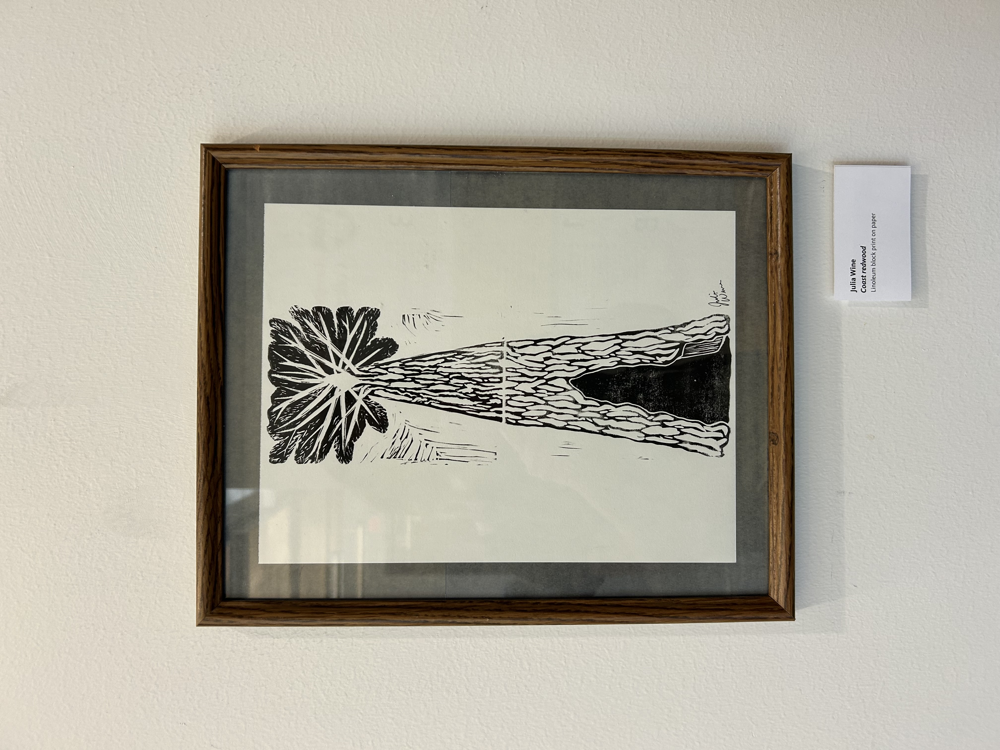
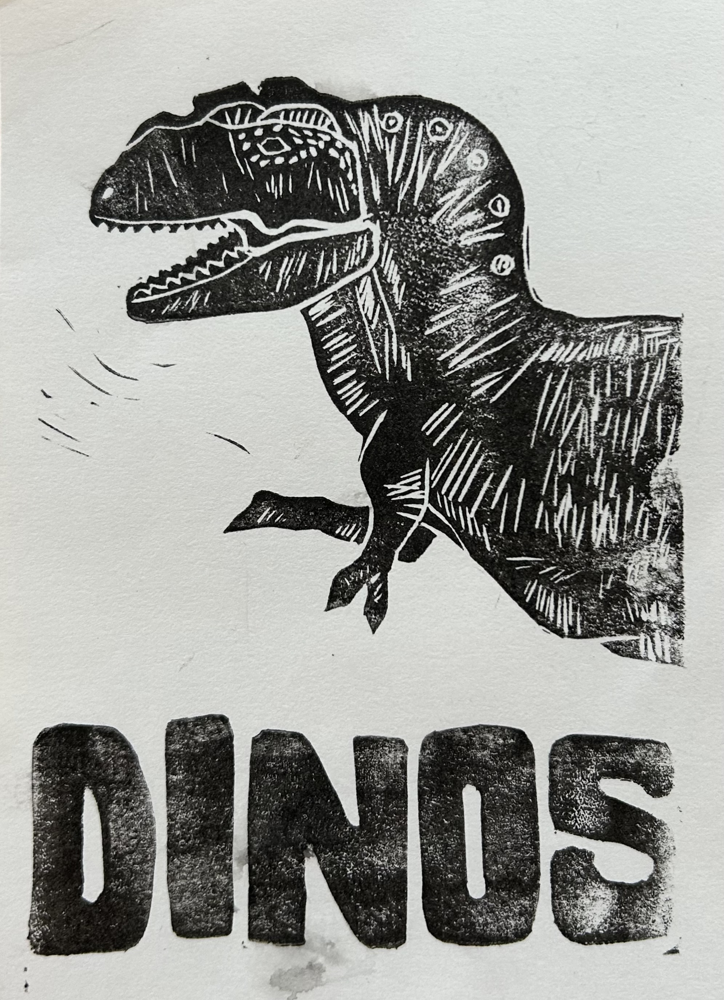
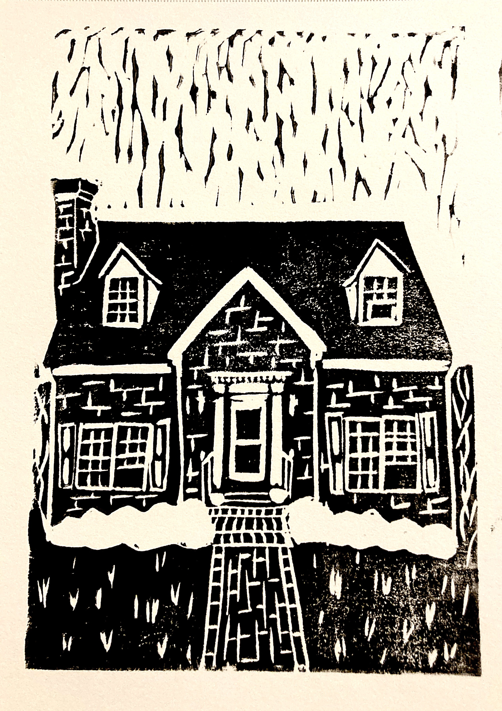
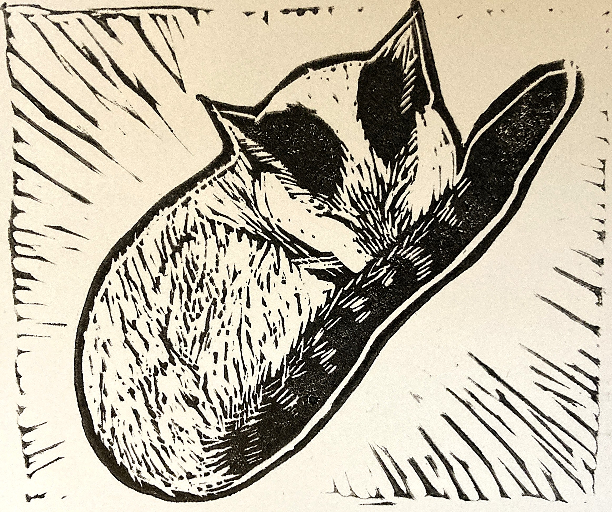
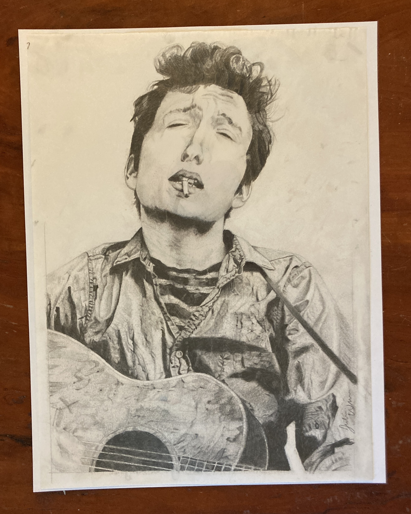
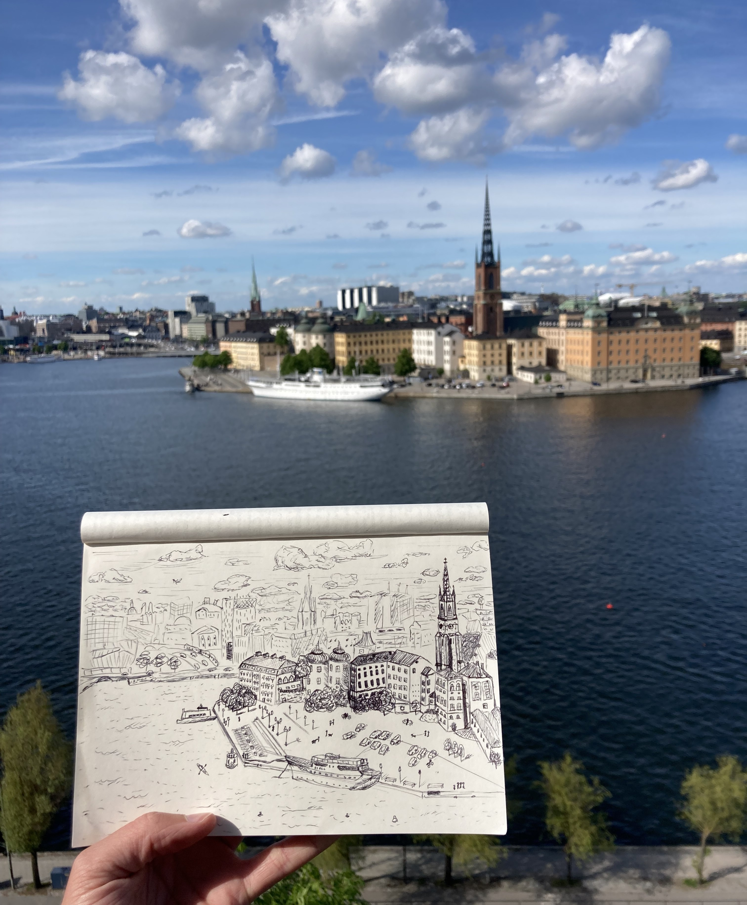

Linocut printmaking, collage, and illustration exploring nostalgia and the natural world.

Linocut print of a coast redwood

Linocut print of the Dinos mascot, George

Linocut print of a house in Williamsburg, VA

Linocut print of a napping cat

Pencil drawing of Bob Dylan

Plain air sketch of Stockholm from a viewpoint